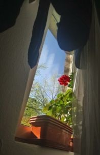

Moje kwiaty - Strona domowa
Przejdź do sekcji "Moje kwiaty"O mnie
Mam 27 lat. Wychowałam się w małej miejscowości, w domu jednorodzinnym. Było i jest
tam wciąż mnóstwo
roślinności. Kwiaty, drzewa, krzewy. Tym samym chcę podzielić się z Wami swoim małym szczęściem, które
przenoszę do swojego małego mieszkania w Warszawie.
» Więcej o mnie
Moje kwiaty
Przyjeżdżając w 2015 roku do Warszawy miałam możliwość mieszkania w kawalerce ok. 27-metrowej. Ze względu na dość dobre warunki udało mi się utrzymać kilka gatunków kwitnących. Pelargonie, petunie azalie, bratki. Teraz mieszkam w miejscu, w którym w okresie letnich upałów jest nawet całkiem znośnie. Dużo cienia, mało słońca, ekspozycja pomieszczenia wschodnia. Warunki do przebywania jednostki ludzkiej nieprzepadającej za ekspozycją na słońce idealna, ale dla kwiatów kwitnących już niekoniecznie. I tak po kilku zajechanych roślinach, postanowiłąm przerzucić się na rośliny całkiem zielone. W dalszej części postaram się co nieco o tych rośłinach opowiedzieć, oraz co najważniejsze ukazać je na zdjęciach.
Najstarsza roślina - Pelargonia
Jest to bylina pochodząca z regionów Afryki (głównie południowej części tego kontynentu). Roślina bardzo
dobrze zachowuje się w polskich warunkach klimatycznych i moim skromnym zdaniem jest jedną z najczęściej
uprawianych roślin wieloletnich w naszym kraju. Wcale mnie to nie dziwi, ponieważ pięknie prezentuje się
w wielu barwach w odsłonach balkonowych.
Mój okaz dostałam od sąsiadki, która miała tą roślinę ze swojego chowu. Jest to jedyna sadzonka z tego
gatunku, która jest ze mną do tej pory. Wszystkie inne, które zostały zakupiłone na bazarze, czy w
kwiaciarniach niestety nie przeżyły. Ta natomiast ma się
całkiem nieźle, choć w tej chwili nie posiada kwiatów, a jest już połowa czerwca. Jest ze mną od wiosny
2017 roku. Czekam z niecierpliwością aż pokaże swoje pierwsze kwiaty w tym roku.

Zamioculcas
Zamioculcas pojawił się mniej więcej w podobnym czasie co pelargonia. Zakupiłam go w pewnym sklepie sieciowym, który rymuje się ze słowem stonka. Nie ma on tak nośnej historii jak ta w przypadku pelargonii, ale przynajmniej cieszy niezmiennie swoim ciągłym zielonym kolorem, a przecież o to chodzi. Sadzonka w momencie zakupu miała ok. 20 cm wysokości, teraz ma pewnie około 0,5 m.